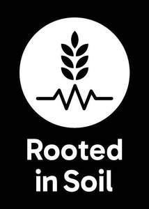
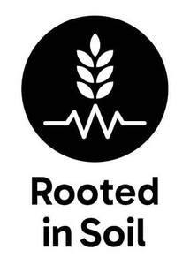

Trade Mark Journal No.2026/008 20 February 2026
UK00004334047 2 February 2026 (30,35,40,41,44,45)
Mark 1

Mark 2

- Class 30
- Flour; cereal flour; maize flour; rice flour; wheat flour; flour mixes.
- Class 35
- Business advisory services relating to product manufacturing; administration of a programme to promote and improve sustainable agricultural practices, sustainable horticultural practices, and sustainable farming practices; administration of incentive schemes; promotional services; promotional marketing; promotion of sustainable agricultural practices, horticultural practices, and farming practices; promoting public awareness in the field of agricultural practices and farming practices; advertising and communication services for the promotion of sustainable agricultural and/or horticultural practices; advertising and communication services for the promotion of sustainable farming practices; advertising services to promote public awareness of environmental initiatives and issues; information, advisory, and consultancy services relating to all the foregoing.
- Class 40
- Milling of flour; custom manufacture of flour for others; grinding of cereal, grain, rice, and wheat; information and advice in relation to soil treatment; information, advisory, and consultancy services relating to all the foregoing.
- Class 41
- Education and training relating to nature conservation and/or the environment; providing of training in the fields of agriculture, horticulture, and/or farming; educational services to promote public awareness of nature conservation, the environment, sustainable agricultural practices, horticultural practices, and farming practices; organising educational events and/or training events that promote and encourage awareness of nature conservation, the environment, environmental sustainability, agricultural practices, sustainable horticultural practices, and farming practices; organising and conducting seminars, conferences, and educational events to share ideas and best practices; publishing of electronic publications; providing electronic publications to promote public awareness of nature conservation, the environment, environmental sustainability, agricultural practices, sustainable horticultural practices, and farming practices; production of educational materials, educational resources, and/or educational online content to promote awareness of nature conservation, the environment, environmental sustainability, agricultural practices, sustainable horticultural practices, and farming practices; information, advisory, and consultancy services relating to all the foregoing.
- Class 44
- Information, advice, and consultancy in relation to farming services; advisory and consultancy services relating to the use of non-chemical treatments for sustainable farming, agriculture and/or horticulture; information, advice, and consultancy in relation to agricultural services relating to environmental conservation; providing information and advice about agriculture and/or horticulture services; advisory and consultancy services relating to the use of fertilisers in agriculture and/or horticulture; information, advice, and consultancy in relation to sustainable farming services; information, advice, and consultancy in relation to sustainable agriculture and/or horticulture services; information, advisory, and consultancy services relating to all the foregoing.
- Class 45
- Preparation of regulations; information, advisory, and consultancy services relating to the preparation of standards; setting of manufacturing standards; information, advisory, and consultancy services relating to manufacturing standards; reviewing standards and practices to assure compliance with laws and/or regulations; information, advisory, and consultancy services relating to all the foregoing.
Whitworth Bros. Limited
Representative: Serjeants LLP